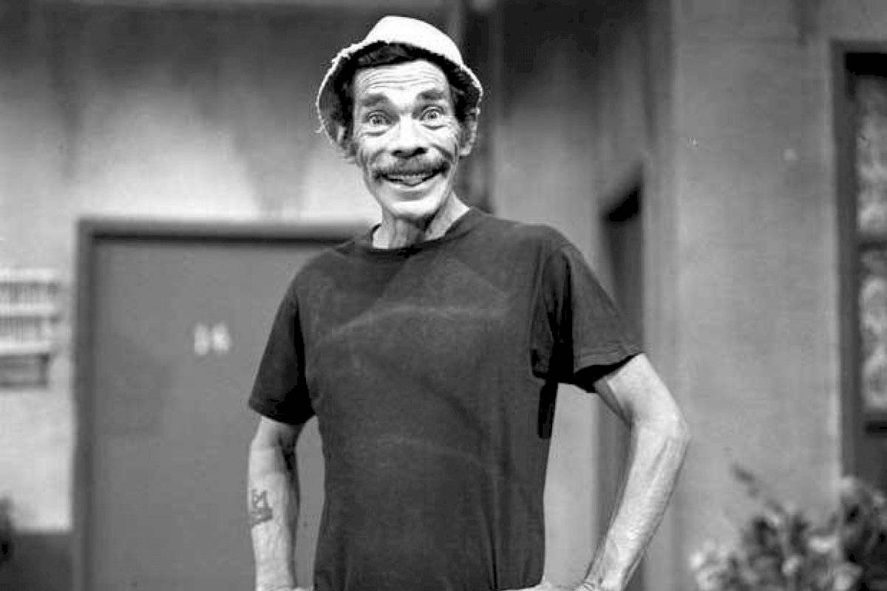

Ramón Valdés
the man who brought joy to people, even after his death
Ramón Valdés as "Don Ramón", on the popular Mexican comic show "El chavo del 8". Photo by infobae.com
Here's a time line of Ramón Valdés's life:
- 1923 - Born in Mexico City
- 1925 - At the age of two, his family moved to Ciudad Juárez. His family gave him the nickname "El Moncho"
- 1949 - Valdés made his acting debut at cinema in the movie Tender Pumpkins. Appearing along with his brother,
Germán Valdés, already an actor better known as "Tin-Tan", and who introduced Ramón into the acting world. - 1950 - He was El Norteño, in The King of the Neighborhood (El rey del barrio),a 1950 Mexican comedy film directed by Gilberto Martínez Solares.
- 1951 - Oh Darling! Look What You've Done! (Spanish:¡Ay, amor, cómo me has puesto!).Germán Valdés, Rebeca Iturbide and Marcelo Chávez. A bakery delivery man falls in love with a middle-class woman after helping her following an accident, but her family object to him. Ramón Valdés was "Panadero" in this film and made many other films along his career, before starts "Chespirito".
- 1968 - Met Roberto Gomez Bolaños (Chespirito) on the program Sábados de la fortuna, Bolaños saw the talent of Váldes and he made him part of the cast of comedians for his new television project called Los supergenios de la mesa cuadrada, where he performed along with María Antonieta de las Nieves and Rubén Aguirre. Later, the program changed its name to Chespirito. It was so successful that it was on television for many years.
- 1971 - He played Don Ramón, when El Chavo del Ocho in 1971, where, achieved more success and recognition than he had experienced before. It is said that his character was similar to Váldes in real life. Coworker Rubén Aguirre stated: "Ramón Valdés was hard to work with. There were always delays in the tapings because Don Ramón would be late."
- 1973 - He also participated in El Chapulín Colorado airing in which he portrayed multiple characters, like "Tripaseca", "Rascabuches", "Súper Sam", "Alma Negra", and many others.
- 1982 - After left his career on television for a while, Valdés returned with Carlos Villagrán on the Venezuelan program Federrico and on "Ah que Kiko"with these two being his final projects.
- 1984 - Starred in a musical program entitled "Aprendiz de Pirata" (Spanish for "Pirate Apprentice") with Luis Miguel in which he performed his song "Tú No Tienes Corazón" of his 1984 album Palabra de honor.
- 1988 - Valdés died of stomach cancer at age 64. The cancer had spread to his spinal cord. Valdés was entombed at Mausoleos del Ángel in Mexico City, the same cemetery where Angelines Fernández, his best friend rests.
Ramón Valdés's career and multiple films:
Valdés is remembered as one of the most beloved actors from El Chavo del Ocho for portraying Don Ramón. On 17 May 2019, a trailer on Valdés's official YouTube account was released for Con permisito dijo Monchito (Spanish for, With permission, said Little Moncho), a documentary featuring Valdés's life with unpublished material, interviews with fans and fellow co-workers and little known things about him.
If you have time, you should read more about this incredible human being on his Wikipedia entry